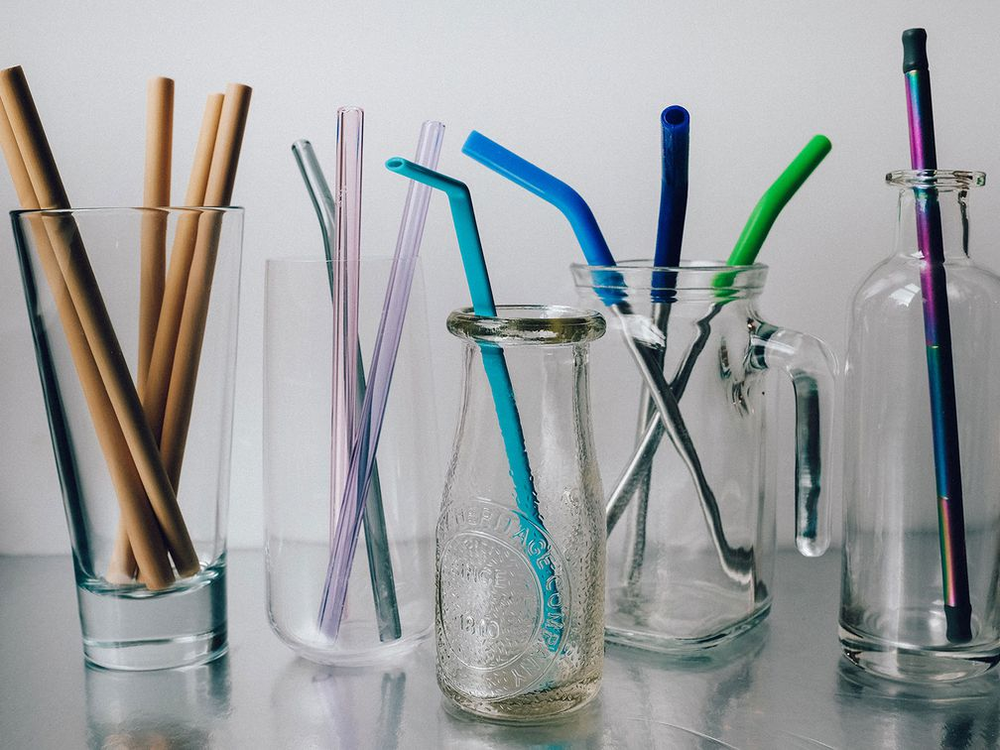

Plastic is harmful to the environment, use something else!
Since producing plastic is inexpensive to most companies, it is largely produced all over the world. However, the chemical make-up of the plastic can precent it from degrading. This can cause the plastic to sit and release harmful chemicals to the environment and this is also what causes the build up of plastic products in oceans and landfills.
Survive as a Turtle:
However, it's also possible to make a change and reduce your use of plastic and other long-lasting products. To live sustainalble is simple enough, start by being aware of what you are using!
How to change:

To protect the earth from plastics is to replace them with more eco-friendly materials: glass, wood, or metals.
Anoter way to keep our oceans clean is to always recycle, there are numbers on plastic containers that determine the type of plastic it is. Some communities only recycle certain types, so it would be best to avoid plastic at all. There are plenty of resources online to find replacements for the everyday items you think you need.
Plastic products can end up in the ocean and in the creatures that live in the ocean, which is not good. On the side we have listed a few example products to order. Amazon also has the option to receive the package with less plastic, do so in the packaging instructions. However, this is only offered for certain produts, also avoid express shipping which costs more energy to do.
Please consider making that lifestyle choice.

NxM
Personally, I love the environment and I hope that this article inspired you to make a change!
ヾ(ｏ･ω･)ﾉ